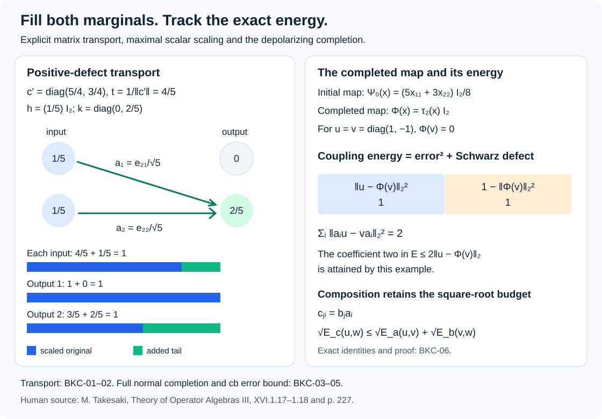

Balanced Kraus completion and coupling energy
A completely positive reconstruction can preserve the trace on a matrix subalgebra while its Kraus operators remain unbalanced on the ambient algebra. We average the second Kraus sum, scale by the largest admissible scalar, and fill the two positive defects. The resulting normal map preserves the ambient trace, and the reconstruction error is controlled at every matrix size.
We also compute the exact energy of the resulting unitary coupling. It splits into reconstruction error and a Schwarz defect. Composing balanced families gives a triangle inequality for the square root of that energy. These facts supply the coupling step in the finite injectivity argument; the later passage to a single conjugating unitary is a separate theorem.
Matching two positive defects
Let \(M\) be a finite von Neumann algebra with a faithful normal state \(\psi\), and let \(\mathcal C:M\to Z(M)\) be a faithful normal center-valued trace. Thus \(\mathcal C\) is positive and unital, is \(Z(M)\)-linear, and satisfies \(\mathcal C(xy)=\mathcal C(yx)\). The center-valued trace is part of the data of this lemma. In the factor application below it is explicitly \(\mathcal C(x)=\tau(x)1\).
The bounded tools used here are the bicommutant and monotone convergence, Finite-vector approximation and the bicommutant through Bounded increasing positive nets have strong suprema, bounded polar decomposition, Polar decomposition and its regularized limit, and spectral projections and their algebra membership, Bounded Borel functions and the spectral measure and Transport, reduction, and membership in an algebra.
Theorem. If \(h,k\in M_+\) satisfy \(\mathcal C(h)=\mathcal C(k)\), then there is a finite or countable family \((a_i)\subset M\) such that
\[ h=\sum_i a_i^*a_i,\qquad k=\sum_i a_i a_i^*, \tag{BKC.1} \]with strong convergence of both positive sums.
Proof. We first find one nonzero piece when \(h\ne0\). A nonzero spectral projection \(e\) of \(h\) satisfies \(h\ge\lambda e\) for some \(\lambda>0\). Let \(z=c(e)\) be its central support. Then
\[ \mathcal C(zk)=z\mathcal C(h)\ge\lambda\mathcal C(e)\ne0. \]Thus \(zk\ne0\), and a nonzero spectral projection \(f\le z\) satisfies \(zk\ge\mu f\) for some \(\mu>0\).
Here is the central-support fact needed to connect these projections. In a faithful representation, the closed span of \(MeH\) has a projection commuting with both \(M\) and \(M'\): its range and orthogonal complement are invariant under these selfadjoint algebras. That projection is central, contains \(e\), and is contained in every central projection containing \(e\); hence it is \(c(e)\). If \(fMe=0\), then \(f\) annihilates that closed span, giving \(fc(e)=0\), contrary to \(0<f\le z\). Therefore \(fMe\ne0\). The polar factor of a nonzero element of \(fMe\) is a partial isometry \(v\) with \(v^*v\le e\), \(vv^*\le f\). Consequently
\[ a=\sqrt{\min(\lambda,\mu)}\,v \quad\hbox{satisfies}\quad 0\ne a^*a\le h,\qquad aa^*\le k. \tag{BKC.2} \]Choose, by Zorn's lemma, a maximal set of nonzero operators whose every finite first sum is at most \(h\) and every finite second sum is at most \(k\). A chain has its union as an upper bound. This set is countable: each number \(\psi(a_i^*a_i)\) is positive, finite sums are bounded by \(\psi(h)\), and only finitely many can exceed any fixed positive threshold \(1/r\). The union of these finite sets over \(r\ge1\) contains the whole set.
The positive partial sums therefore have strong limits \(H\le h\) and \(K\le k\). Normality and traciality of \(\mathcal C\) give
\[ \mathcal C(h-H)=\mathcal C(k-K). \tag{BKC.3} \]If \(h-H\ne0\), (BKC.2) gives a new nonzero admissible operator for the remainders. Scaling it by a number in \((0,1)\), if necessary, avoids every member of the countable existing set and preserves both inequalities. This contradicts maximality. Hence \(H=h\), and faithfulness in (BKC.3) gives \(K=k\). If \(h=0\), faithfulness gives \(k=0\), and the empty family works. \(\square\)
No traciality of the counting state \(\psi\) was used. The source's separable-predual hypothesis supplies such a state: take a countable norm-dense family of normal states and their sum with positive summable weights. Normal states separate positive nonzero elements, so the sum is faithful. Normality follows from norm convergence in the predual. The theorem therefore includes the full source case.
Finite matrix transport and the necessary center condition
For matrices the matching can be performed explicitly. Diagonalize
\[ h=\sum_{i=1}^{r}\lambda_i\,|e_i\rangle\langle e_i|, \qquad k=\sum_{j=1}^{s}\mu_j\,|f_j\rangle\langle f_j|, \tag{BKC.4} \]listing only the positive eigenvalues. Equality of their ordinary traces means \(\sum_i\lambda_i=\sum_j\mu_j\). Choose nonnegative numbers \(t_{ji}\) with column sums \(\lambda_i\) and row sums \(\mu_j\), and put
\[ a_{ji}=\sqrt{t_{ji}}\,|f_j\rangle\langle e_i|. \tag{BKC.5} \]Then \(a_{ji}^*a_{ji}=t_{ji}|e_i\rangle\langle e_i|\) and \(a_{ji}a_{ji}^*=t_{ji}|f_j\rangle\langle f_j|\), proving both sums.
Such a transport table needs no existence theorem. Start with the first unfilled row and column, assign the smaller of their remaining masses, and subtract it from both. At least one is then exhausted. Move past exhausted rows or columns and continue. Equal total masses make the last exhaustion simultaneous; at most \(r+s-1\) entries are nonzero. If both totals are zero, use no entries.
For example, the defects
\[ h=\tfrac15 I_2,\qquad k=\operatorname{diag}(0,2/5) \]are filled by
\[ a_1=\tfrac1{\sqrt5}e_{21},\qquad a_2=\tfrac1{\sqrt5}e_{22}. \tag{BKC.6} \]Their first sums put \(1/5\) on each input coordinate, while both second sums land in the second output coordinate.
The center-valued condition in BKC-01 is necessary: applying the normal center-valued trace to (BKC.1) gives \(\mathcal C(h)=\mathcal C(k)\) term by term. Scalar trace equality alone is insufficient in a nonfactor. In \(M=\mathbb C\oplus\mathbb C\), with the equal-weight scalar trace, \(h=(1,0)\) and \(k=(0,1)\) have equal scalar traces. Every \(a\in M\) has \(a^*a=aa^*\), so no family can give these two different sums. Here \(\mathcal C\) is the identity. In a finite direct sum of matrix algebras, the transport construction must accordingly be carried out separately in each central block.
Internal Kraus operators and matrix coordinates
Let \(D\subset M\) be a unital matrix subalgebra with matrix units \(e_{ij}\), \(1\le i,j\le m\). For any cp map \(T:D\to M\), the matrix
\[ C=[T(e_{ij})]_{i,j}\in M_m(M) \]is positive: \([e_{ij}]\) is the positive Gram matrix \([e_{i1}][e_{1j}]\), and complete positivity applies. Write its positive square root as \(V=[v_{ki}]\), so \(T(e_{ij})=\sum_kv_{ki}^*v_{kj}\). The continuous positive calculus in BK-01 constructs this square root in \(M_m(M)\).
Define \(m^2\) operators in the ambient algebra by
\[ b_{kr}=\sum_i e_{ir}v_{ki}. \tag{BKC.7} \]Matrix-unit multiplication gives
\[ b_{kr}^*e_{ij}b_{kr}=v_{ki}^*e_{rr}v_{kj}. \]Summing over \(k,r\) and using linearity yields
\[ T(x)=\sum_{k,r}b_{kr}^*xb_{kr}\quad(x\in D). \tag{BKC.8} \]If \(T\) is unital, its first Kraus sum is \(I\). This proves the internal finite Kraus formula directly, without requiring the reconstruction to be multiplicative.
Now suppose \(M\) is a finite factor with faithful normal tracial state \(\tau\), and put \(Q=D'\cap M\). Every \(x\in M\) has unique coordinates
\[ x=\sum_{i,j}e_{ij}x_{ij},\qquad x_{ij}=\sum_r e_{ri}xe_{jr}\in Q. \tag{BKC.9} \]Commuting the second formula with \(e_{ab}\) proves membership in \(Q\); multiplying it by \(e_{ij}\) and summing proves the expansion. Conversely, for \(q_{ij}\in Q\), applying the coordinate formula to \(\sum e_{ij}q_{ij}\) returns \(q_{ij}\). Products and adjoints therefore give the usual matrix-algebra identification. A central element of \(Q\) commutes with both \(D\) and \(Q\), hence with their span \(M\), so \(Q\) is a factor.
Traciality and the matrix units imply
\[ \tau(e_{ij}q)=\delta_{ij}\tau(q)/m\qquad(q\in Q). \tag{BKC.10} \]For \(i\ne j\), cycling \(e_{jj}\) gives zero. For \(i=j\), cyclically move \(e_{i1},e_{1i}\) to show equality of all \(m\) diagonal values; their sum is \(\tau(q)\).
Relabel the unital Kraus family as \(b_\ell\), and write \(c=\sum_\ell b_\ell b_\ell^*=\sum_{i,j}e_{ij}c_{ij}\). If \(\tau T=\tau|_D\), then
\[ \tau(xc)=\tau(T(x))=\tau(x)\quad(x\in D). \]Testing \(x=e_{ji}\) and using (BKC.10) gives
\[ \tau(c_{ij})=\delta_{ij}. \tag{BKC.11} \]This is the exact coefficient identity needed for balancing.
The finite-factor norm average, with comparison proved
We first prove the projection comparison used in the averaging step. In a finite factor \(Q\), projections \(p,q\) with \(\tau(p)\le\tau(q)\) satisfy \(p\precsim q\). Choose a maximal family of nonzero partial isometries with orthogonal initial projections below \(p\) and orthogonal final projections below \(q\). Zorn's lemma applies; the trace makes the family countable as in BKC-01. Orthogonality gives a strong sum \(v\) and a strong sum of the adjoints, with \(v^*v\le p\), \(vv^*\le q\). For example, \(\sum_i\|v_i\xi\|^2\le\|\xi\|^2\), proving convergence.
If both complementary projections \(p-v^*v\) and \(q-vv^*\) were nonzero, their central supports in the factor would be one. The central-support argument of BKC-01 and polar decomposition would supply another orthogonal partial isometry. Thus one complement is zero. Their trace inequality forces the first complement to be zero in either case. This proves comparison. Equal scalar traces give equivalence, since the second complement then also has trace zero.
Norm averaging. For a finite list \(x_1,\ldots,x_s\in Q\) and \(\varepsilon>0\), there is a finite convex combination
\[ P(x)=\sum_\ell\alpha_\ell w_\ell xw_\ell^*, \qquad \alpha_\ell\ge0,\quad\sum_\ell\alpha_\ell=1, \tag{BKC.12} \]such that \(\|P(x_j)-\tau(x_j)1\|<\varepsilon\) for every \(j\).
Here is a direct proof for every finite factor, including matrix factors. For a nonscalar selfadjoint \(x\), write \(a=\min\operatorname{Sp}(x)\), \(b=\max\operatorname{Sp}(x)\), \(t=(a+b)/2\), and let \(p=1_{(-\infty,t]}(x)\). Both \(p\) and \(1-p\) are nonzero. If \(p\precsim1-p\), choose a partial isometry \(v\) from \(p\) onto \(p'\le1-p\). The operator
\[ w=v+v^*+1-p-p' \]is a selfadjoint unitary interchanging \(p,p'\). The bounds \(x\ge ap+t(1-p)\) and \(x\le b1\) give
\[ \frac{x+wxw^*}{2}\ge\frac{a+t}{2}\,1,\qquad \frac{x+wxw^*}{2}\le b1. \]For the lower bound, sum the original and conjugated inequalities; on \(1-p-p'\) the lower coefficient is \(t\ge(a+t)/2\). Thus the new spectral diameter is at most
\[ b-\frac{a+t}{2}=\frac34(b-a). \tag{BKC.13} \]If \(1-p\precsim p\), apply the same inequalities to \(-x\), with lower projection \(1-p\), endpoints \(-b,-a\), and midpoint \(-t\). They remain valid even when \(t\) is an eigenvalue.
Iterating reduces spectral diameter by \((3/4)^N\), or stops at a scalar. Every step preserves trace. The scalar trace lies between the spectral endpoints of a selfadjoint operator, so its distance from the resulting operator is bounded by that diameter. Each finite composition is still a finite convex combination of unitary conjugations. This proves the one-element assertion.
For a finite list, treat the current image of each real and imaginary part successively, using half the desired tolerance. Later averages fix scalars and are norm contractions, so they retain every earlier error bound. Their traces remain the original traces. This proves the simultaneous assertion without separability or diffuse-projection assumptions.
Largest admissible scaling and exact normal completion
Theorem. Let \(M\) be a finite factor with faithful normal tracial state \(\tau\), \(D\subset M\) a unital matrix subalgebra, and \(T:D\to M\) ucp with \(\tau T=\tau|_D\). For every \(\varepsilon>0\), there is a finite or countable family \((a_i)\subset M\) such that
\[ \sum_i a_i^*a_i=\sum_i a_i a_i^*=1, \qquad \|\Phi|_D-T\|_{\mathrm{cb}}<\varepsilon, \tag{BKC.14} \]where \(\Phi(x)=\sum_i a_i^*xa_i\) is a normal trace-preserving ucp map on all of \(M\). Both positive sums and the map series converge strongly. The completely bounded norm is the supremum of the operator norms at all finite matrix amplifications.
Proof. Start with the finite family from BKC-03. Apply BKC-04 in \(Q=D'\cap M\) simultaneously to all \(c_{ij}\). By (BKC.11), for any chosen \(\eta>0\) it gives
\[ c'=\sum_\ell\alpha_\ell w_\ell cw_\ell^*, \qquad \|c'-1\|<\eta. \tag{BKC.15} \]Indeed require each coefficient error to be below \(\eta/m^2\) and sum their norms. Replace \(b_i\) by \(\widetilde b_{i\ell}=\sqrt{\alpha_\ell}\,w_\ell b_i\). Since every \(w_\ell\) commutes with \(D\), this leaves \(T|_D\) unchanged, its first sum is still \(1\), and its second sum is \(c'\). Relabel this finite family as \(b_1,\ldots,b_p\).
Since \(\tau(c')=1\), the number \(r=\|c'\|\) satisfies \(r\ge1\). Use the scalar
\[ t=r^{-1},\qquad h=(1-t)1,\qquad k=1-tc'. \tag{BKC.16} \]Both defects are positive and \(\tau(h)=\tau(k)=1-t\). If \(r=1\), then \(0\le c'\le1\) and faithfulness gives \(c'=1\); the existing family is already balanced. Otherwise apply BKC-01 with the explicit center-valued trace \(\tau(\,\cdot\,)1\) to fill \(h,k\). Append that family to \(a_i=\sqrt t\,b_i\), \(i\le p\). Both completed sums are exactly one.
This is the largest admissible common scaling: replacing the original squared amplitudes by \(s\) requires both \(s1\le1\) and \(sc'\le1\), hence \(s\le\min(1,\|c'\|^{-1})=t\). This assertion concerns the scalar scaling step; it does not claim a nearest balanced map.
We justify the full operator series. In a faithful representation on \(H\), let \(W:H\to\bigoplus_i H\) be \(W\xi=(a_i\xi)_i\). The first sum makes \(W\) an isometry. Define
\[ \Phi(x)=W^*\operatorname{diag}(x,x,\ldots)W. \tag{BKC.17} \]This formula proves complete positivity and unitality. The finite partial sums converge strongly for arbitrary \(x\): their tail on a vector \(\xi\) has norm at most \(\|x\|\,\|(1-P_F)W\xi\|\), where \(P_F\) selects the finite coordinate set. That tends to zero. If \(x_\nu\uparrow x\) is a bounded increasing positive net, the quadratic forms are sums of the increasing quantities \(\langle x_\nu a_i\xi,a_i\xi\rangle\). Interchanging the two positive suprema proves preservation of the increasing supremum, hence normality.
For \(x\ge0\), normality of the trace and the second balanced sum give
\[ \tau(\Phi(x)) =\tau\!\left(x^{1/2}\left(\sum_i a_i a_i^*\right)x^{1/2}\right) =\tau(x). \tag{BKC.18} \]Linearity extends trace preservation to every \(x\).
Let \(B(x)=\sum_{i>p}a_i^*xa_i\) be the tail. It is normal cp and \(B(1)=(1-t)1\). If \(t<1\), division by \(1-t\) makes it ucp, so Schwarz at every matrix size gives \(\|B\|_{\mathrm{cb}}=1-t\); equality follows at the unit. For \(t=1\), the tail is zero. On \(D\),
\[ \begin{aligned} \Phi&=tT+B,\\ \|\Phi|_D-T\|_{\mathrm{cb}} &\le2(1-t)=\frac{2(r-1)}r <\frac{2\eta}{1+\eta}. \end{aligned} \tag{BKC.19} \]Choose \(\eta>0\) so that \(2\eta<\varepsilon\). This proves the theorem, including all matrix levels. \(\square\)
For the explicit second marginal \(c'=\operatorname{diag}(5/4,3/4)\), the largest scalar is \(t=4/5\). Formula (BKC.16) gives exactly the two defects in (BKC.6). One concrete initial family is
\[ b_{ij}=\sqrt{c_i/2}\,e_{ij},\qquad (c_1,c_2)=(5/4,3/4). \]Its first sum is \(I_2\), its second sum is \(c'\), and its map on \(M_2\) is \(\Psi_0(x)=(5x_{11}+3x_{22})I_2/8\). After scaling by \(\sqrt{4/5}\) and adding (BKC.6), the map becomes exactly \(\Phi(x)=\tau_2(x)I_2\). On the scalar subalgebra both maps are the identity. This is an explicit completion step for that reconstruction, and also supplies the depolarizing example used next.
Exact coupling energy, variance, and composition
Let \(M\) have faithful normal tracial state \(\tau\), and let \((a_i)\) be balanced as in (BKC.14). For unitaries \(u,v\in M\), define
\[ \mathcal E_a(u,v)=\sum_i\|a_i u-v a_i\|_2^2. \]Expanding finite partial sums, then using their strong limits and normality of \(\tau\), gives
\[ \mathcal E_a(u,v) =2-2\operatorname{Re}\tau(u^*\Phi(v)). \tag{BKC.20} \]Each positive term sums to one; the cross term sums to the displayed scalar pairing. There is an exact error decomposition:
\[ \begin{aligned} \mathcal E_a(u,v) &=\|u-\Phi(v)\|_2^2+ \bigl(1-\|\Phi(v)\|_2^2\bigr),\\ \|u-\Phi(v)\|_2^2 &\le\mathcal E_a(u,v)\le2\|u-\Phi(v)\|_2. \end{aligned} \tag{BKC.21} \]The second summand in the first line is the trace of the positive Schwarz defect \(\Phi(v^*v)-\Phi(v)^*\Phi(v)\). The upper bound follows by writing (BKC.20) as \(2\operatorname{Re}\tau(u^*(u-\Phi(v)))\) and applying trace Cauchy–Schwarz. The factor two is necessary.
For example, in \(M_2\), the family \(a_{ij}=e_{ij}/\sqrt2\) is balanced and gives \(\Phi(x)=\tau_2(x)I_2\). For \(u=v=\operatorname{diag}(1,-1)\), the reconstruction error is one, the Schwarz defect is one, and the energy is two. Directly, the two diagonal Kraus terms commute with \(u\), while each off-diagonal term contributes one to the squared \(2\)-norm. Thus the upper coefficient two in (BKC.21) is attained.
For finite tuples, call \((u_k)\) and \((v_k)\) \(\delta\)-related if one balanced family has \(\mathcal E_a(u_k,v_k)<\delta\) for every \(k\). This retains the source's normalization. There are useful elementary structural properties:
- Adjointing the family reverses the relation with the same energies. The two sums interchange, and \(u(a_i u-v a_i)^*v=a_i^*v-u a_i^*\); adjoints and unitary multiplication preserve the tracial norm.
- If \(a_i\) connects \(u\) to \(v\), and \(b_j\) connects \(v\) to \(w\), then \(c_{ji}=b_j a_i\) is balanced and
Here are the convergence and norm details for the second assertion. Positivity permits interchange of the two sums, giving \(\sum c_{ji}^*c_{ji}=\sum_i a_i^*(\sum_jb_j^*b_j)a_i=1\) and likewise \(\sum c_{ji}c_{ji}^*=1\). Write
\[ c_{ji}u-wc_{ji} =b_j(a_i u-v a_i)+(b_jv-wb_j)a_i. \]For \(X_i=a_i u-v a_i\), the squared norm of the first array in the Hilbert direct sum is
\[ \sum_{i,j}\|b_jX_i\|_2^2=\sum_i\|X_i\|_2^2. \]For \(Y_j=b_jv-wb_j\), traciality and the other balanced sum give \(\sum_{i,j}\|Y_j a_i\|_2^2=\sum_j\|Y_j\|_2^2\). All these nonnegative sums converge, by (BKC.20); the Hilbert-space triangle inequality proves (BKC.22).
Consequently
\[ d((u_k),(v_k)) =\inf_a\ \max_k\sqrt{\mathcal E_a(u_k,v_k)} \tag{BKC.23} \]is a pseudometric on unitary tuples in a fixed faithfully tracial algebra. It is finite, since the family \(a_1=1\) works and gives distance at most two. Identity and symmetry follow above. Choosing families within any positive tolerance of the two infima, composing them, and then sending that tolerance to zero proves the triangle inequality. We do not assert that zero distance forces equality of tuples or an exact unitary conjugacy.
From finite models to balanced unitary couplings
Let \(M\) now be an injective \(\mathrm{II}_1\) factor. We first justify the matrix subfactor needed for the application.
A nonzero projection in a type \(\mathrm{II}_1\) factor has a proper nonzero subprojection. Repeatedly retain the smaller-trace part of such a split. This produces nonzero subprojections of arbitrarily small positive trace in any nonzero projection. Given \(e\) and \(0\le s\le\tau(e)\), take a maximal orthogonal family of nonzero subprojections of \(e\) whose finite trace sums are at most \(s\). It is countable by the trace bound. If its strong sum \(g\) had trace below \(s\), the nonzero remainder \(e-g\) would contain a sufficiently small projection to add, contradicting maximality. Thus \(\tau(g)=s\).
Successively cut \(1\) into \(m\) projections of trace \(1/m\). The comparison proof of BKC-04 makes them equivalent. Choose partial isometries \(v_i\) from the first projection to the others, with \(v_1\) equal to that first projection. Then \(e_{ij}=v_i v_j^*\) form matrix units summing diagonally to \(1\). Their span is a unital \(D\cong M_m\), and its normalized trace is the restriction of \(\tau\).
Now fix unitaries \(u_1,\ldots,u_n\in M\) and \(\delta>0\). Exact matrix trace on the reconstruction side and Rounding the dual functional improves the bound give a trace-preserving ucp reconstruction from a matrix algebra with unitary models, with errors below \(\delta/4\). Identify that matrix algebra with the \(D\) just constructed. Apply BKC-05 to its reconstruction, with map error below \(\delta/4\). The resulting balanced family and unitaries \(v_k\in D\) satisfy
\[ \|u_k-\Phi(v_k)\|_2<\delta/2,\qquad \mathcal E_a(u_k,v_k)<\delta. \tag{BKC.24} \]The first inequality uses that each \(v_k\) has operator norm one and that \(\|x\|_2\le\|x\|\). The second is (BKC.21).
Thus every finite unitary tuple in an injective \(\mathrm{II}_1\) factor has arbitrarily small coupling energy to a tuple inside an actual matrix subfactor. No separable-predual hypothesis has entered. Turning this family of intertwiners into one approximately conjugating unitary is the subsequent coupling theorem, not a consequence asserted here.

The left calculation uses \(c'=\operatorname{diag}(5/4,3/4)\), the maximal scalar \(t=4/5\), and the two matrix units of (BKC.6). The right calculation is the exact depolarizing example of BKC-06: energy \(2\) equals error squared \(1\) plus Schwarz defect \(1\). BKC-05 proves the general completely bounded error bound; BKC-06 proves the composition inequality.
Full source comparison and corrected formulas
The human source is M. Takesaki, Theory of Operator Algebras III, Lemma XVI.1.17 on printed page 224, Lemma XVI.1.18 on pages 224–226, and the coupling calculation and unnumbered definition on page 227.
BKC-01 proves the complete two-defect lemma, retaining its center-valued condition and requiring only a faithful normal counting state instead of separable predual. BKC-02 gives a finite transport algorithm and an exact obstruction to replacing the center-valued condition by scalar trace equality.
BKC-03–05 prove the full balanced-reconstruction lemma for every finite factor with its faithful normal tracial state, including the source's arbitrary \(\mathrm{II}_1\) factor. They prove the internal Kraus formula, coefficient identities, projection comparison, simultaneous norm averaging, exact positive defects, normality and all positive-series limits. The estimate is strengthened to completely bounded norm. BKC-06–07 prove the complete ensuing coupling calculation and finite-tuple application.
The residual on page 226. After scaling by \(\sqrt{1-m^2\delta}\), the first partial sum is \((1-m^2\delta)1\). Its defect is therefore
\[ h=1-\sum_{i\le p}a_i^*a_i=m^2\delta\,1, \tag{BKC.25} \]where the printed line instead ends with \(1-m^2\delta\). For instance \(m=2,\delta=1/16\) gives partial sum \(3I/4\) and defect \(I/4\), not \(3I/4\). The source's later tail value \(S(1)=m^2\delta\) agrees with the corrected expression. Formula (BKC.16) keeps the actual scaling and residual distinct.
The energy calculation on page 227. The scalar identity must retain the trace:
\[ \mathcal E_a(u,v) =2\operatorname{Re}\tau(u^*(u-\Phi(v))). \]The following Cauchy–Schwarz bound must also retain the factor two. The printed intermediate expression drops the trace symbol, and its next inequality drops that factor, although the final \(2\varepsilon\) budget has the correct scale. The depolarizing example has energy \(2\) and error \(1\), so a coefficient-one inequality would be false. Equations (BKC.20–21) give the corrected identity and bound.
The earlier programme treatment is Balancing Kraus families and unitary couplings, Sections 1–4 and solved checks. Its finite Kraus input is Lemma 4.1, the internal matrix construction. The present lesson writes the comparison, averaging and factor projection cuts explicitly, strengthens the completion estimate, and proves the coupling energy decomposition and composition rule. It gives no source-completion credit to Theorem XVI.1.19 or its sampling and ultrapower lemmas.